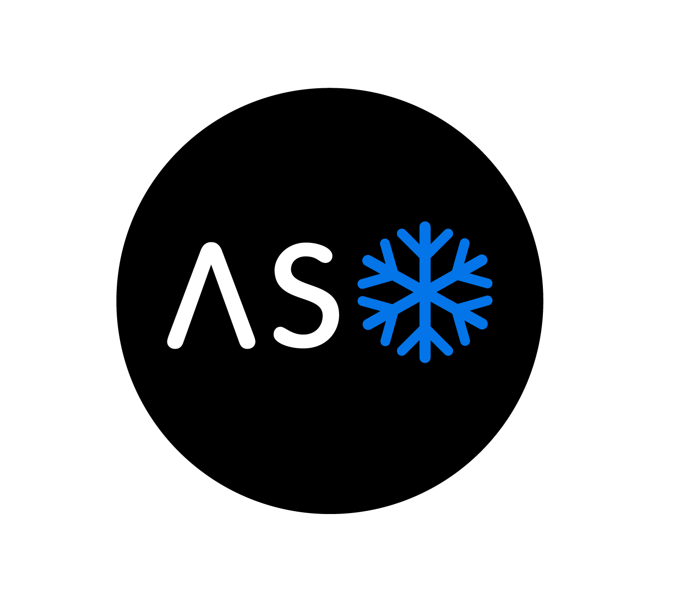

Calculating LiDAR point cloud uncertainty and propagating uncertainty to snow-water equivalent data products (incomplete)
GEOL 6325 final project
Peter J. Gadomski
We decomposed full waveform airborne LiDAR data from the Airborne Snow Observatory and georeferenced those data. We propagated component errors through to final LiDAR points. We demonstrate the procedure for calculating snow depths and SWE measurements with these propagated errors.
Why snow? What is SWE?
Snow-water equivalent (SWE) is a measure of the water content in a snowpack. SWE measurements over large mountain basins are used by water managers to predict the volume and rate of water production during a melt season. SWE measurements also give us a picture of the amount of water stored in the mountains, which helps quantify water shortages or surpluses.
To measure SWE, we need to measure the depth and density of a snowpack. $$ SWE = depth \times density $$ In the "old days", we measured both by hand using instruments such as a Federal sampler. The snow community has developed remote sensing techniques to gather more data over larger areas, but more work needs to be done, particularly to measure snow densities with remote sensing.
The Airborne Snow Observatory
The Airborne Snow Observatory, or ASO, is an airborne LiDAR sensor and hyperspectral camera that has been gathering data on snowpacks in California and Colorado since 2013. Using LiDAR data, in-situ snow density measurements, and hyperspectral data, the ASO project calculates SWE and models the future melt rate of mountain snowpacks, all with a (nominally) 24-hour turnaround.
Measuring SWE manually
Using a federal sampler to measure SWE in the Red Mountain Pass in Colorado. Over the course of eight hours of collection, we collected about twenty points over an about five km square area.
Ground truthing ASO data
The early ASO campaigns required ground-truthing with TLS data. This is a TLS collect in the Senator Beck Basin in southwestern Colorado.
Why error propagation?
It is crucial to provide uncertainty estimates with any measurement, including LiDAR-derived data products. However, per-point uncertainties are difficult to calculate and are not commonly used by LiDAR practitioners. If uncertainties are provided, they are usually estimated at a dataset-wide level based upon the quality of the geopositioning and the LiDAR manufacturer's quoted specifications.
We hope to provide per-point uncertainties derived from the fundamental parameters of the LiDAR georeferencing equation.
Calculating snow depths and densities
SWE is depth times density. In order to calculate SWE, we need to measure both.
Snow depth pretty straightforward
We can calculate snow depths from LiDAR data by comparing snow-free and snow-on scans. These data are provided by the Airborne Snow Observatory.
Calculating snow depth from two LiDAR scans
Subtract the height of the snow-on scan from the point height of the snow-free scan. Because points are unordered, a snow-on point will probably not have a snow-free point directly beneath it; use an interpolation method to calculate a snow-free height for each snow-on point.
Snow-free scan
Taken in fall 2014.
Snow-on scan
Taken in spring 2015.

Snow depths
Calculated using a simple point-to-mesh distance.
Snow density tough to measure
The Natural Resources Conservation Service maintains a network of remote snow monitoring stations called SNOTEL sites.5 Included in the SNOTEL data products are snow depth and SWE (snow-water equivalent, i.e. the height of water that would be left if you melted a given depth of snow) calculations. These two values can be used to extract a snow density measurement, as described in Equation 1.
As you can see from the below figure, these density measurements are not great — snow density as a percentage of water should never go above one. However, measuring snow density with remote sensing, particularity that of wet snow, is a hard problem, and so SNOTEL sites can be the best data available.
Snow density at one SNOTEL station
The Beartown SNOTEL station is near our area of interest.

LiDAR
LiDAR sensors use laser energy to measure the distance between a sensor and a reflective target; the most common type uses the two-way travel time of a pulse of laser energy to calculate a range. $$ range = c \frac {t} {2} $$ where $c$ is the speed of light and $t$ is the two-way travel time of the laser pulse. When mounted to a mobile platform such as an aircraft, a LiDAR scanner can provide a large number of range measurements that cover a large spatial area.
A basic LiDAR system is a one-dimensional measurement tool — it measures ranges from the scanner to the target. In order to measure points in two dimensions, scanners use a rotating or oscillating mirror to redirect the laser energy. A full three dimensions of measurement are enabled by moving the mirror in space, as in the case in mobile and airborne scanning, or rotating it around another axis, as is the case with terrestrial scanning.
Even though we mount a LiDAR scanner on a moving platform, the scanner itself still only measures the range to a target. These range measurements must be combined with position and attitude information to get an x-y-z point in a global reference frame, in a process called georegistration or georeferencing. The LiDAR georeferencing equation is well-established1: $$ \mathbf{X} = \mathbf{X}^g + \mathbf{R}^g \left( \mathbf{R}^l \mathbf{X}^s + \mathbf{X}^l \right) $$ where $\mathbf{X}$ is the final laser point in the global reference frame, $\mathbf{X}^g$ is the position of the GNSS receiver in the global reference frame, $\mathbf{R}^g$ is the rotation matrix for the Interital Motion Unit (IMU) that rotates the point from local level to the global reference frame, $\mathbf{R}^l$ is the rotation matrix of the rotation displacement between the IMU and the LiDAR scanner that rotates the point from the scanner's own coordinate system to local level, $\mathbf{X}^s$ is the scanned point in the Scanner's Own Coordinate System (SOCS), and $\mathbf{X}^l$ is the positional displacement between the GNSS receiver and the LiDAR scanner's origin in the local level reference frame. Creating a georeferenced point cloud from mobile LiDAR data is then a matter of mounting a GNSS/IMU unit rigidly to the same body as the scanner and applying the georeferencing equation to each LiDAR point.2
LiDAR internals
The laser source transmits pulses of laser energy, which are reflected by the rotating polygonal mirror and bounce off of a target. The time between pulse emission and energy detection is measured, and that time difference is used to calculate the range to target.

Error propagation
As you're seeing, there are a lot of components that go into collecting a single LiDAR measurement, and each one of these components has an associated uncertainty of measurement. Turning our full waveform data into points has uncertainty. The measured angle of the mirror when the laser pulse is emitted has uncertainty. The position and attitude of the plane has uncertainty. All of these factors contribute to some percentage of the total uncertainty in the final x-y-z coordinates of our LiDAR points.
When we compute the uncertainty of a computed quantity, the usual procedure is to use the General Law for the Propagation of Variances.4 We compute a 3x3 covariance matrix $\mathbf{C}$ for each point using the following relationships: $$ \mathbf{C} = \begin{bmatrix} \sigma_x^2 & \sigma_{xy} & \sigma_{xz} \\ \sigma_{xy} & \sigma_y^2 & \sigma_{yz} \\ \sigma_{xz} & \sigma_{yz} & \sigma_z^2 \end{bmatrix} = \mathbf{A} \mathbf{C}_l \mathbf{A}^T $$ where $\mathbf{A}$ is the Jacobian matrix of the partial derivatives of the Taylor series expansion of Equation 3, truncated at the first term, and $\mathbf{C}_l$ is the covariance matrix of variances and covariances for each observed quantity.
Error sources
There are fourteen measurements that go into the measurement of a point $\mathbf{X}$:
- The range $r$ and angle $\theta$ measured by the LiDAR system
- The x, y, and z displacement $\mathbf{X}^l$ between the origin of the laser system and the origin of the GNSS system (lever arm)
- The roll $d\omega$, pitch $d\phi$, and yaw $d\kappa$ rotational offsets between the scanner's coordinate system and the IMU's coordinate system (boresight)
- The roll $\omega$, pitch $\phi$, and yaw $\kappa$ measured by the IMU
- The x, y, and z positions $\mathbf{X}^g$, as measured by the GNSS
We can use these fourteen unknowns to calculate the Jacobian matrix as required for Equation 3.
Some of the errors, such as those in the position and attitude of the IMU/GNSS system, are products of the IMU/GNSS processing and are available as timestamped records. Other errors must be estimated or measured. Per Glennie, the lever-arm errors are commonly assumed to be about 2cm each, and the boresight errors can be assumed to be 0.001° in roll and pitch and 0.004° in yaw. Errors in the range of scanner measurements are generally a function of the timing circuitry in the scanner are are usually on the order of 1cm to 2cm. Angular errors in the scanner measurements are complicated due to the divergence of the laser beam — Glennie discusses reasonable simplifications to get a single angular value.
For this work, we do not take into account the uncertainty due to the interaction of the laser energy with the terrain. For more discussion on that topic, see Hartzell.4
Full-waveform LiDAR
The idea that LiDAR scanners measure points in space is a bit of a simplification. To see why, you need to know a bit about how the energy returned to a LiDAR scanner is actually measured.
When laser energy bounces off of a target and returns to the scanner, it passes back through some optics until it hits one or more more detectors.3 These detectors are very similar to those that exist in your digital camera — they record the intensity of the incident energy on the detector. The detectors in a LiDAR system are hooked up to some very precise timing machinery that records the time of the data sample with about a nanosecond resolution. This produces a timeseries of samples of the incident energy on the scanner's detector.
Some examples of real-world waveform data are shown below.
Reference pulse
The energy of the laser pulse as it leaves the scanner.

Return pulse
The energy of the laser pulse as it returns to the scanner. The scanner that collected these data has two channels, high and low, one which is more sensitive than the other. Notice the multiple peaks in the low channel, indicating that this laser pulse interacted with multiple targets.
Turning these full waveform data samples into points is a bit of a tricky problem. You can use the local maximums of the return data, but that can have trouble in cluttered or otherwise non-ideal environments. Many people use a Gaussian decomposition to turn the returned waveform into the summation of several Gaussian pulses, but that is imperfect if the outgoing laser energy isn't Gaussian (which it usually isn't).
For this work, we use a simple peak detection method to convert our full waveform data to discrete points. We would have loved to implement a full Gaussian decomposition, but we ran out of time.
Results
We focused on a single 2015 flightline taken in the Uncompahgre region of southwestern Colorado for our test data.
Due to lack of discrete-return data in the products provided by ASO (as of the time of this writing), we were forced to implement our own custom full-waveform decomposition in addition to georeferencing. This was no small task, and our waveform decomposition process is not complete to a satisfactory level. However, we used data provided by the decomposition to demonstrate error propagation anyways.
We analytically solved the partial derivatives required for each entry in the Jacobian matrix. Due to time constraints, we excluded the contributions in error provided by the boresight alignment and the lever arm measurements. As these errors are just approximated based upon user experience (Glennie 2007) we did not consider them necessary for this proof-of-concept project.
We also did not take into account any local terrain effects on the error in the point. This was due to both time constraints and the poor quality of our georeferenced data. Per Hartzell et al. terrain effects can have a significant and interesting effect on per-point errors, and so should be considered in the future.
Finally, we did not include dynamic GNSS/IMU error information in this final product. We wanted to, but we ran out of time. Sorry.
$\sigma_x$
Error (one sigma) in the x direction.
$\sigma_y$
Error (one sigma) in the y direction.
$\sigma_z$
Error (one sigma) in the z direction.
Due to the poor nature of our full-waveform decomposition, we did not attempt to validate these data with other georeferenced data provided by ASO, nor did we use these data to calculate any derivative products (e.g. snow depths and SWE). More work needs to be done on the processing end, or better data is needed, before any reasonable snowpack properties can be calculated.
Summary and future work
We implemented custom peak detection7 for sdf files7, one of Riegl's full-waveform data formats. We implemented georeferencing8 and demonstrated its correctness using another airborne discrete-point dataset. We then applied this georeferencing solution to airborne LiDAR data from ASO and propagated component uncertainties through to the final point cloud product.
Future work:
- Propagate errors all the way through to snow depths and SWE measurements.
- Improve custom full-waveform processing.
- Implement Multiple-Time-Around calculations.
- Improve software engineering so that it is easier to apply georeferencing solutions to other datasets.
- Include all components of error, and include terrain effects.
Acknowledgements
Many thanks to Dr. Jeffery Deems for providing the ASO data, and to the entire ASO team. Thanks as well to Dr. Craig Glennie and Preston Hartzell for advising on the georeferencing and error propagation.
Links
- Airborne Snow Observatory provided data.
- RS/GIS center of expertise at the US Army Corps of Engineers Cold Regions Research and Engineering Laboratory provided general support.
- A collection of software tools were written for this project:
- sdf-rs: reads Riegl's .sdf format using their
fwifclibrary, provides methods to convert waveforms into discrete points. - peakbag: processes full-waveform LiDAR data in a format-independent manner.
- pabst: converts between various LiDAR data file formats.
- las-rs: reads and writes las files.
- rivlib-rs: reads Riegl's rxp file format using their
rivliblibrary.
- sdf-rs: reads Riegl's .sdf format using their
- Glennie, C. L. (2007). Rigorous 3D error analysis of kinematic scanning LIDAR systems. Journal of Applied Geodesy, 1(3). ↩
- Since LiDAR points are not collected at evenly spaced intervals in time, GNSS/IMU measurements must be interpolated. ↩
- The scanner that we used has two channels, one which is more sensitive than the other. This is to provide a wider dynamic range for signal detection. ↩
- Ghilani, C. D. (2010). Adjustment Computations. ↩
- http://www.wcc.nrcs.usda.gov/snow/ ↩
- https://github.com/gadomski/peakbag ↩
- https://github.com/gadomski/sdf-rs ↩
- https://github.com/gadomski/georef ↩
- Hartzell, P. J., Gadomski, P. J., Glennie, C. L., Finnegan, C., & Deems, J. S. (2015). Rigorous Error Propagation for Terrestrial Laser Scanning with Application to Snow Volume Uncertainty. ↩